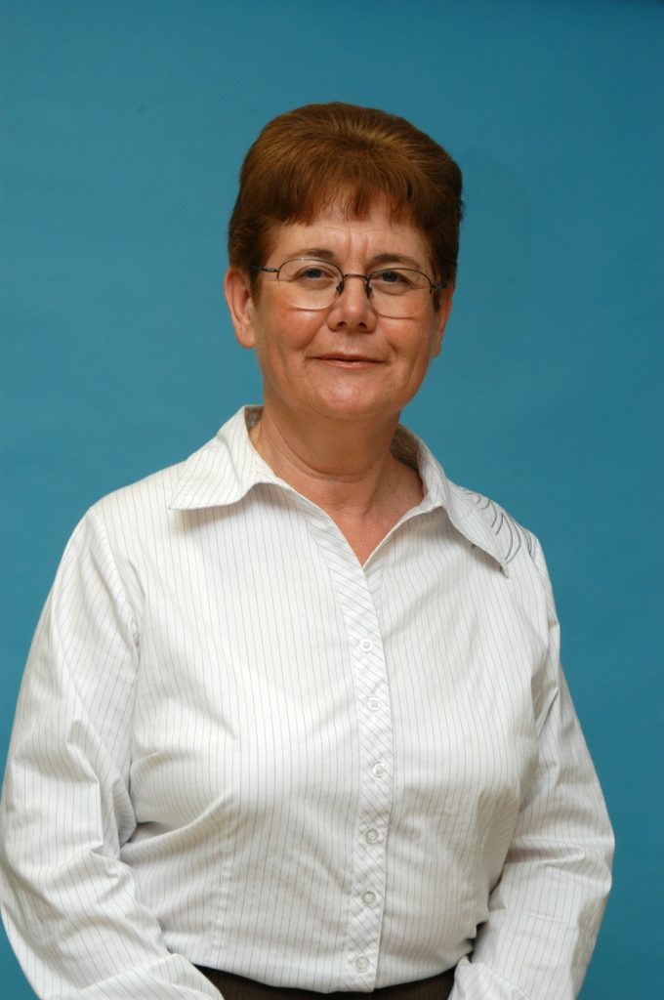

| פרופ’ שחר קווטינסקי – דיקאן הפקולטה להנדסת חשמל ומחשבים על שם וויטרבי ב – טכניון . על העלייה בביקושים בהנדסת חשמל ומחשבים |
חברי הסגל שלנו
פרופסור שחר קוטינסקי פגשנו בפרק 19 על ממריסטורים, אך בשיחות הכנה כבר ידענו שהוא יבוא לפרק נוסף לדבר על נושא את מאד חשוב: הכשרת מהנדסי חשמל בישראל.
פרופ’ אמריטוס גדי אייזנשטיין, ראש המכון לננו טכנולוגיה ע”ש רסון, הנדסת חשמל ומחשבים בטכניון : מה קורה בדור החדש של השעונים הגרעניים? שמודד שינויים בתוך גרעין האטום.
טרטזין צהוב – צבע המאכל הוא תקוותם של חוקרים באוני’ סטנפורד, שגילו שהוא הופך את עורם של עכברים לשקוף. פרופ’ עדו קמינר , הפקולטה להנדסת חשמל ומחשבים בטכניון: לא יחליף עומק כזה של חדירה של סיטי, כן יאפשר הסתכלות דרך העור.
פרק מיוחד על “המחקרים והחוקרים המבטיחים של השנה” בהשתתפות פרופ’ שחר קוטינסקי 06.06.22 בוגרים שלנו
הבוגרים שלנו

רפי נוה – מזל, טיימינג ואנשים טובים
אינטל, NDS, טאוור סמיקונדקטור, גיוון אימג’ינג ומרכז היזמות של הטכניון: שיחה עם רפי נוה על פועלו בהייטק הישראלי והעולמי.

שלומית וייס – מוליכה למחצה
רגע לפני שמונתה למנהלת הראשית של ארגון ההנדסה של אינטל העולמית, דיברנו עם שלומית וייס על התפתחותה האישית והטכנולוגית לאורך השנים, על התחרות הבין-גושית בשוק השבבים היום ועל האתגרים אז והיום.
האזינו לפרק הראשון של העונה החמישית של הפודקאסט שלנו.

דב מורן – דב יוזם
כשרוצים להתפאר בהישגים של ישראל, אחת הדוגמאות שתמיד עולות היא הדיסק און קי. המציא אותו דב מורן, אחד היזמים והמשקיעים הבולטים בתעשיית ההייטק הישראלית.
בפרק הסיום החגיגי של העונה נשמע ממנו על עשרת הדברות שלו ליזמות מצליחה, הכשלונות והאתגרים שבדרך.

יזהר שי – למה לי פוליטיקה עכשיו
יזהר שי הוא יזם, משקיע, פעיל חברתי ופוליטיקאי (לשעבר, לפחות לעת עתה).
בשיחה איתו ננסה להבין למה בוגרי הטכניון לא מגיעים כמעט לפוליטיקה, ואיך זה קשור לקבלת החלטות מבוססות מדע.

מולי אדן – מיסטר פיקס איט
מולי אדן היה במשך שנים אחד האנשים הבכירים ביותר באינטל העולמית ואחת הדמויות הבולטות בהייטק הישראלי. בשיחה קולחת, שהוקלטה בתקופה המאתגרת שאחרי אסון ה-7 באוקטובר, מתאר מולי את תפיסת עולמו לגבי חדשנות ויצירתיות, נותן קצת אופטימיות לגבי העתיד ואפילו מביא את הסיפור שמאחורי הכובע המפורסם

ד”ר דרורה גושן – מהנדסת תודעה
ד״ר דרורה גושן נזכרת בימים שבהם היתה אחת מקומץ מהנדסות, ומה היא עושה עד היום כדי שיותר נשים צעירות יבחרו בתחום הזה.

אוולין לנדמן היא אחת הנשים הבכירות בתעשיית השבבים – ואין הרבה כאלה. היא עלתה מאורוגווי ישר לטכניון. בהמשך, אחרי הרבה שנים באינטל, הייתה אחת ממייסדי מלאנוקס… אבל עזבה רגע לפני האקזיט המפורסם. בפרק, היא מספרת לנו על החלטות אמיצות, על חיבתה לאתגרים ולאקשן, ועל החוויה של ללמוד עברית בטכניון.מראיינת: רותי דונג, מנכ”לית ארגון בוג
אהרון אהרון – סיפורי כישלונות אישיים
מה ניתן ללמוד מהם וכיצד הם היוו בסיס להצלחה.
הרצאה מאת מר אהרון אהרון בוגר הפקולטה , ולשעבר מנכ”ל הרשות לחדשנות וסמנכ”ל טכנולוגיות חומרה בחברת אפל ישראל.
סטודנטים שלנו
סיפורו של רותם קנדל בן ה-28 לא נשמע בכל יום • על אף שהמציאות בה חי סחררה אותו במשך כמעט שנתיים, הוא הצליח לשמור על שגרת לימודים בטכניון, בעודו לומד לתואר כפול בפיזיקה ובהנדסת חשמל ומחשבים • וההישג המרגש שקטף מוכיח – עבודה קשה משתלמת